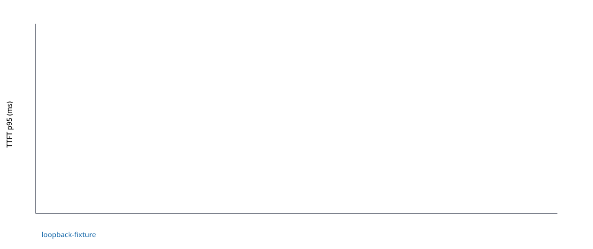

Run 20260810T134620Z_loopback-fixture_3de48ad532; runtime loopback-fixture; execution status completed. SLO-passing cells: 1 of 1 evaluated. Warm-up errors: 0 of 0.
Plan SHA-256: f20423c0b3042cda9648a26340bb413d4b58a97082773bbd53bbb478aac30e91. Workload SHA-256: 68afffe1e4d2171a92fa537f6adc9a1c799b5043ae8d8ae7602ed0acd6e71f90.

| Block | Cell | Status | SLO | N | TTFT p95 ms | E2E p99 ms | TPOT p50 ms | Output tok/s | Good req/s | Error rate | Cost |
|---|---|---|---|---|---|---|---|---|---|---|---|
| 1 | closed__ctx8__out2__c1 | completed | True | 1 | 29.12 | 29.14 | 0.022 | 64.59 | 32.296 | 0.0000 | n/a |